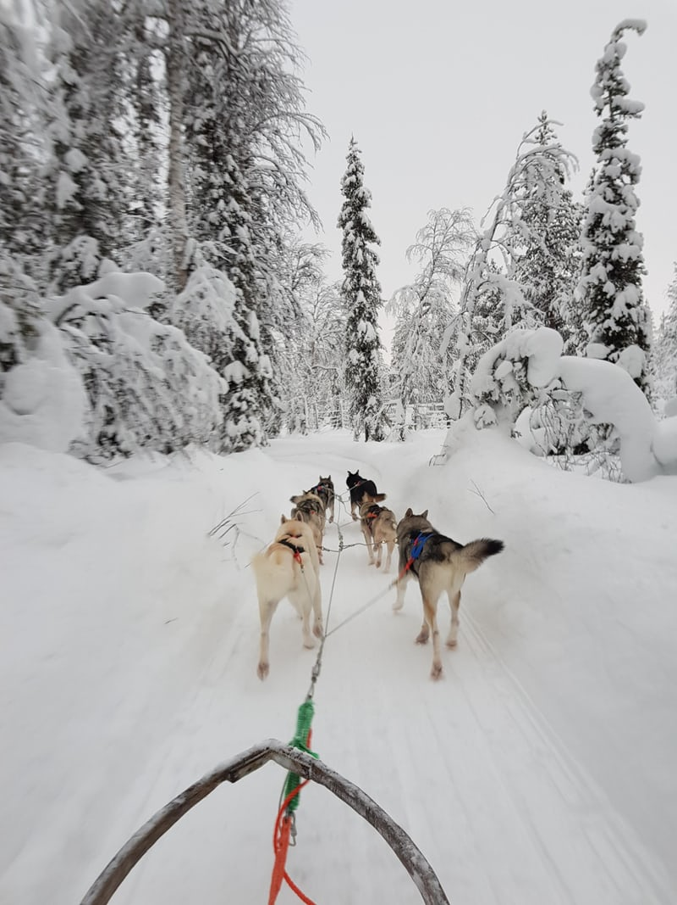

Design Challenge
Fronteering.com seeks to solve a huge problem- how to monimize the impact of tourism. On the left above is the design challenge for the company, whch focuses on how the company itself can work on the issue, and on the right is the website's specific design challenge, which is clearly...